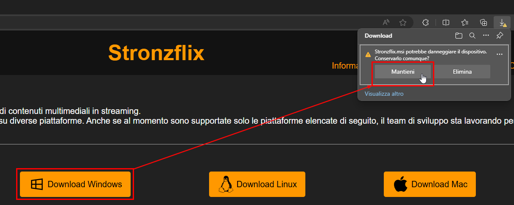
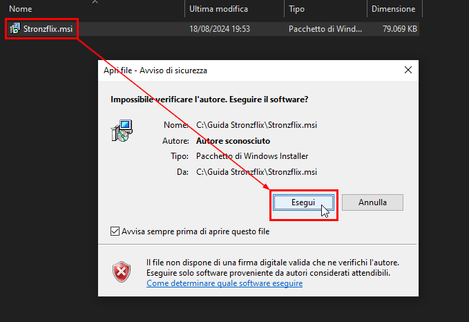

Una volta scaricato il file, il browser potrebbe identificarlo come pericoloso. Per continuare il download, clicca su "Mantieni" o "Conserva" (o simili).
In seguito, aprendo il file, potrebbe apparire una finestra di avviso. Per continuare l'installazione, clicca su "Esegui".
Infine, è sufficente seguire le istruzioni del programma di installazione.
Altre opzioni di download per le piattaforme sopraccitate sono disponibili nella sezione dedicata.
Se la tua piattaforma non è ancora supportata, segnalala su GitHub.